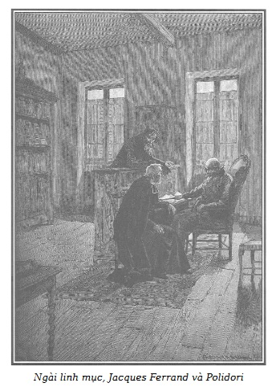

Chúng tôi mời quý vị độc giả trở lại văn phòng của viên chưởng khế Jacques Ferrand. Nhờ thói quen ba hoa đưa chuyện của các viên thư ký, họ hầu như không ngớt bận tâm về những hành động ngày càng kỳ cục của ông chủ, chúng tôi sẽ thuật lại những sự việc xảy ra ở đây từ khi Cecily mất tích.
– Trăm xu ăn mười đây! Nếu cứ tiếp tục héo hắt mãi như thế này thì chưa hết tháng, ông chủ sẽ đi đứt!
– Có điều là từ khi cô hầu – cô này người Alsace thì phải – bỏ nhà ra đi, ông chủ chỉ còn da bọc xương. Già chơi trống bỏi.
– Ui dào! Thì ra ngài ta phải lòng cô gái Alsace! Chính vì thế mà từ khi cô ả ra đi, người ngài ta cứ khô đét.
– Ông chủ ấy à? Ông chủ mà mắc bệnh tương tư? Thật khôi hài!
– Trái lại! Ông chủ lại gần gũi mấy ông linh mục hơn bao giờ hết.
– Đó là chưa kể ông cha xứ, một người đáng kính, nói gì thì phải nói cho đúng, hôm qua khi đi ra, đã nói với một ông linh mục khác (tôi đã nghe được câu chuyện của họ): “Thật đáng phục… Ông Ferrand là lý tưởng của lòng từ thiện và hào phóng trên thế gian này.”
– Ông cha đã nói thế à? Về chính ông chủ? Và không nói tâng lên chứ?
– Nói sao?
– Ông chủ ta là hiện thân lý tưởng của từ thiện và hào phóng trên thế gian này?
– Phải, chính tôi đã nghe thấy thế!
– Vậy thì, tôi chẳng hiểu gì hết! Ông cha xứ vốn có thanh danh và đúng là danh bất hư truyền, quả là một đấng chăn chiên giỏi.
– Ôi, thực là thế đấy, khi nói đến Người thì phải nói cho nghiêm chỉnh và tôn trọng. Người cũng nhân hậu và từ thiện như ông Nhỏ-Măng-tô-xanh*, và khi thiên hạ nói về một người nào như thế, thì coi như là đã phán quyết.
Theo tác giả, đó là một nhà từ thiện ẩn danh có thật ở Paris hồi đó, tên thật là Champion. Alexandre Dumas cũng nói đến người này trong tác phẩm Bá tước Monte Cristo.
– Nói như vậy không phải là ít đâu!
– Không đâu! Đối với ông Nhỏ-Măng-tô-xanh cũng như đối với cha xứ, người nghèo chỉ có một lời, một lời trung hậu, từ trái tim.
– Vậy thì nói nốt ý nghĩ của tôi nhé. Khi ông cha xứ khẳng định một điều gì thì ta phải tin ông ấy, vì ông ấy không thể nói dối. Tuy nhiên, theo ông cha xứ mà tin là ông chủ từ thiện và cao thượng… thì tôi tin mà chẳng thoải mái gì!
– Ô! Hay làm sao! Chalamel! Ôi, mới hay làm sao!
– Nghiêm chỉnh mà nói, tôi muốn tin vào điều ấy cũng như tin vào một phép lạ. Chẳng gì khó hơn! Ông Ferrand mà hào phóng! Ông ấy… rán sành ra mỡ thì có!
– Tuy nhiên, thưa quý ngài, thế bốn mươi xu cho bữa trưa của chúng ta thì sao đây?
– Chứng cứ trứ danh gớm! Cũng như ngẫu nhiên mọc mụn ở mũi ấy… Đấy là một biến cố!
– Đúng, nhưng mặt khác, thì tay trưởng văn thư đã bảo với tôi là ba ngày nay, ông chủ đã đổi một số tiền lớn kinh khủng ra tín phiếu kho bạc nhà nước và…
– Vậy thì?
– Nói đi xem nào.
– Chính đó là một điều bí mật.
– Lại càng có thêm cớ để nói ra! Điều bí mật đó là…
– Phải thề danh dự là không nói ra nói vào gì nhé!
– Thề trên đầu con cái chúng tôi ấy!
– Nếu tớ mà hở ra thì bà cô Messidor của tớ sẽ tung hê cả lên!
– Vả lại, thưa quý ngài, ta hãy cứ liên hệ lại điều mà nhà vua vĩ đại Louis XIV đã oai nghiêm nói với Thống lĩnh cộng hòa Venezia trước triều đình đông đủ bá quan:
Điều gì bí mật đến đâu
Thư ký nó biết, mật đâu có còn!*
Nhân vật Chalamel hay ứng khẩu thành thơ, vận dụng phương ngôn tục ngữ. Trong nguyên bản, có chơi chữ: khi một thư ký (clerc: đọc là cle) nắm được một điều bí mật, thì phải công nhận là điều bí mật ấy đã sáng tỏ rồi (clair: rõ, sáng, cũng đọc là cle).
– Hay! Chalamel bắt đầu giở cái kho cách ngôn tục ngữ của hắn đây!
– Lấy đầu Chalamel!
– Tục ngữ là đạo lý cuộc sống. Với danh nghĩa ấy, tôi đòi anh phải nói điều bí mật đó ra.
– Này, chớ có nói bậy… Tôi nói với anh rằng tay trưởng văn thư đã buộc tôi phải hứa không hở ra với ai!
– Đúng! Nhưng ông ta có cấm anh nói cho tất cả mọi người đâu!…
– Tóm lại, điều đó cũng không phải từ đây mà loang ra.
– Cu cậu cũng muốn hở câu chuyện kín ra bằng chết!
– Vậy thì! Ông chủ nhượng lại chức trách; vào giờ này đây, công việc hẳn đã xong xuôi!…
– Úi chà!
– Tin tức mới lạ chứ!
– Nghe mà ngã ngửa.
– Choáng cả người!
– Vậy thì ai sẽ nhận cái gánh nặng mà ông chủ vừa cất đi cho nhẹ gánh*?
Chơi chữ: Mấy từ charge, décharge vừa là danh từ đa nghĩa (trò đùa, gánh nặng, trách nhiệm…) vừa là động từ (charge: gánh lấy trách nhiệm, décharge: rũ bỏ trách nhiệm).
– Chúa tôi! Cái tay Chalamel ăn nói tối nghĩa không chịu được!
– Nào biết được ông ta nhượng lại cho ai mà nói!
– Nếu ông ta nhượng thì đó là bởi vì ông ta muốn nhập thế, chiêu đãi, khao vọng… xuất đầu lộ diện như giới thượng lưu vẫn nói ấy mà!
– Chung quy, hẳn có cái gì đó!
– Mà ông ta chẳng có bầu đoàn thê tử gì cả!
– Tôi đoan chắc là phải có một cái gì đó! Trưởng văn thư nói đến số tiền hơn một triệu, kể cả cái giá của chức trách nữa.
– Hơn một triệu kia à, ngon ghê!
– Thiên hạ đồn là ông ta bí mật buôn bán chứng khoán cùng với thiếu tá Robert và kiếm được ối tiền!
– Chưa kể là ông ta sống bủn xỉn, một khi đã biết tiêu thì lại bốc giời bằng mấy kẻ khác.
– Vì thế tôi cũng nói như Chalamel, tôi tin khá chắc là ông chủ lúc này muốn kín đáo “hưởng ngọt” ấy mà!
– Mà ông ấy sẽ sai lầm tệ hại nếu không biết miệt mài say đắm trong khoái lạc và cũng không đắm chìm trong cái thú ngắm nghía mê ly những ngọc ngà, châu báu… nếu ông ta có đủ phương tiện… vì như là nhà thơ Scotland Ossian đã nói về động Fingal*:
Một kỳ quan trên đảo Hebrides, xứ Scotland, lúc triều lên, tiếng sóng vỗ, âm vang vào trần hang nghe như tiếng nhạc.
Chưởng khế mà thích ăn chơi
Bạc tiền rủng rỉnh trận cười mới xôm!*
Nguyên văn: Chưởng khế nào mà trác táng, nếu có đủ tiền mặt thì sẽ thắng cuộc.
– Lấy đầu Chalamel!
– Đã thế, ông chủ trông có vẻ chơi bời gớm!
– Quỷ sứ trông thấy ông ta cũng phải độn thổ mà chạy!
– Cha xứ ca ngợi đức từ thiện của ông ta kia mà!
– Vậy thì! Thương người rồi hãy thương thân – Thế là anh không biết những giới luật của Chúa mà thôi! Hỡi kẻ cô độc kia ơi! Nếu ông chủ lại tự xin mình gia ơn cho mình những thú vui vua chúa nhất… thì bản thân ông ta phải có nghĩa vụ chấp thuận, bằng không thì ông ta chẳng tự coi mình ra cái quái gì!
– Tôi ấy à, điều làm tôi thấy lạ, đó là người bạn chí thân của ông ta xuất hiện như trên trời rơi xuống và cứ xoắn xuýt bám lấy ông ta như hình với bóng.
– Chưa kể mặt hắn trông rõ hãm tài!
– Tóc đỏ như củ cà rốt!
– Tôi sẽ thiên nhiều về mặt quy kết mà bảo rằng: việc có kẻ không mời mà đến ấy là hậu quả của sự nhỡ nhàng mà ông Jacques Ferrand đã phạm phải khi bắt đầu sự nghiệp, vì như con Đại bàng xứ Meaux đã nói về vấn đề cô nàng dịu dàng La Vallière đòi đeo khăn choàng tu kín*:
La Vallière thất tình muốn đi tu kín.
Dù cho cưới trẻ, lấy già
Lúc nào kết thúc cũng là tí nhau…
– Lấy đầu Chalamel!
– Đúng đấy!… Với hắn thì không tài nào nói chuyện nghiêm chỉnh được một lúc.
– Rõ chuyện ngớ ngẩn. Ai dám cho rằng cái tên lạ mặt ấy lại là con của ông chủ. Hắn nhiều tuổi hơn ông ta nữa kia, rõ quá rồi còn gì!
– Thế đấy! Cùng ra thì đành vậy. Chẳng hề gì!
– Lạ chưa kìa! Con hơn tuổi cha mà chẳng hề gì sất!!
– Thưa với quý ngài, tôi đã nói là cùng ra, đại, đại… siêu “cùng ra” kia mà!
– Thế ông cắt nghĩa điều ấy thế nào?
– Đơn giản thôi: trong ca này, thì kẻ “đột nhập” có thể đã lỡ lầm và có thể là cha đẻ thay vì là con ông Ferrand.
– Lấy đầu Chalamel!
– Đừng có nghe hắn, anh phải biết rằng hễ hắn bắt đầu nói những chuyện dớ dẩn, thì hắn kéo dài cả giờ.
– Điều chắc chắn là kẻ đột nhập ấy trông rõ hãm tài và không lúc nào rời ông Ferrand.
– Hình như tôi đã thấy hắn ở ngay tại đây.
– Tôi thì không!
– Này, thưa các quý ngài, có phải các ngài cũng đã chẳng để ý đó sao; từ mấy ngày hôm nay, cứ đều đặn hai tiếng đồng hồ, lại có một người với bộ ria vàng hoe thật dài, rậm, dáng dấp quân sự, đến hỏi tên lạ mặt đó qua người gác cổng: sau đó hắn lại quay gót đi như một người máy rồi hai giờ sau lại đến.
– Đúng đấy, tôi cũng có nhận xét như vậy… tôi thấy hình như khi ở đây ra, tôi đã gặp nhiều người có vẻ như đang giám sát cái nhà này.
– Nghiêm chỉnh mà nói, ở đây đang xảy ra một cái gì thật kỳ lạ.
– Rồi cũng sẽ biết thôi!
– Về vấn đề này, tay trưởng văn thư biết rõ hơn bọn ta nhiều, nhưng hắn tinh khôn giữ ý đấy.
– Về việc này ấy mà, vừa mới đây, tay ấy đi đâu rồi nhỉ?
– Hắn đến nhà bà Bá tước bị ám sát, hình như lúc này, đối với bà ta, đã hết mọi sự lôi thôi!
– Nữ Bá tước Mac-Gregor à?
– Đúng, sáng nay, bà ta cho mời ông chủ gấp nhưng ông ta lại cử trưởng văn thư đi thay.
– Chắc là để làm di chúc.
– Không đâu, vì bà ta đã khá rồi kia mà!
– Tay trưởng văn thư ấy bận rộn nhỉ, đến lắm việc từ khi kiêm việc thủ quỹ thay Germain nữa!
– Về vấn đề Germain, lại một chuyện kỳ lạ nữa!
– Việc gì kia?
– Để xin tha cho cậu ta, ông chủ đã khai là chính ông ta, Jacques Ferrand, đã tính lầm sổ sách và tìm thấy số tiền mà ông ta đòi ở Germain.
– Tôi thì tôi chẳng thấy gì kỳ cục cả, mà chỉ thấy đúng thôi, các anh còn nhớ không, xưa nay tôi vẫn nói: Germain không thể nào là người gian lận.
– Dù sao thì cũng rất phiền cho cậu chàng là đã bị bỏ tù vì tội gian lận.
– Vào địa vị tôi, tôi sẽ đòi ông Ferrand phải bồi thường thiệt hại.
– Về việc này, ít ra ông ta cũng phải nhận lại anh chàng làm thủ quỹ để tỏ ra là Germain vô can.
– Đúng đấy! Nhưng có thể Germain đã không muốn như vậy.
– Cậu ấy có vẫn còn ở vùng nông thôn khi ra khỏi nhà giam không, từ đó cậu ta đã viết thư báo cho chúng ta biết ông Ferrand đã rút đơn kiện đấy?
– Chắc thế, vì hôm qua tôi đã đến địa chỉ cậu ta báo; họ bảo là cậu ta đang ở quê và có thể gửi thư cho cậu ta về Bouqueval, qua Écouen, ở nhà bà Georges.
– Ái chà! Thưa các ngài! Một cái xe đến kìa! – Chalamel thò đầu ra ngoài cửa sổ nói. – Thế chứ! Chẳng phải là cỗ xe đỏm dáng của tay Tử tước nổi tiếng ấy đâu! Các cậu còn nhớ cái tay Saint-Remy hào nhoáng với cái tên hậu cần mặc đồ kim tuyến lòe loẹt và gã đánh xe to như hộ pháp đeo tóc giả màu trắng ấy không? Lần này chỉ thực sự là một cái “hộp lãnh sam”xe khách thôi!
– Ai xuống xe đấy?
– Đợi tí đã!… Ái chà, một cái áo dài đen!
– Một phụ nữ! Một phụ nữ!… Ôi, ra xem nào!
– Trời đất ơi! Sao cái thằng chạy giấy này “ngứa nghề” sớm thế? Chỉ nghĩ đến đàn bà, đến phải xích nó lại thôi, kẻo nó sẽ bắt cóc hết đàn bà con gái ngay giữa đường phố mất; vì như là Thiên nga xứ Cambrai trong tác phẩm Nói về đức dục, viết để dạy Thái tử, đã nói:
Ba thằng chạy giấy, coi chừng!
Kẻo chúng nhảy xổ vào lưng đàn bà!
– Lấy đầu Chalamel!
– Dào ôi!… Thưa ông Chalamel, thấy ông bảo là một cái áo dài đen, tôi lại cứ tưởng…
– Đó là ông cha xứ! Đồ ngu!… Hãy rút ra bài học!
– Cha xứ à! Đấng chăn chiên giỏi ấy à?
– Đúng là một người đáng trọng!
– Ông này không thuộc “dòng Tên” đâu!
– Tôi tin chắc thế, và nếu tất cả các linh mục đều giống ngài, thì trên đời chỉ rặt những người sùng đạo.
– Này, im đi! Có ai xoay nắm cửa kìa!
– Nghiêm, nghiêm!… “Người” đấy!
Thế là tất cả các thầy ký cúi đầu trên bàn làm việc, làm ra vẻ hăm hở, viết lấy viết để, ngòi bút kêu lạo xạo trên giấy.
Khuôn mặt tai tái của vị linh mục vừa hiền từ vừa nghiêm trang, mắt nhìn thanh thản, khoan dung.
Một cái mũ chỏm đen nhỏ che kín khoanh tóc gọt đỉnh đầu, bộ tóc xám khá dài trùm lên cổ áo redingote màu hạt dẻ.
Cần phải nói ngay là, do một niềm tin chân chất, người linh mục tốt tuyệt vời ấy đã và hiện đang bị mánh khóe đạo đức giả tài tình, khéo léo và sâu sắc của Jacques Ferrand che mắt.
– Ông chủ đáng kính của các thầy có trong buồng làm việc không ạ?
– Thưa cha, có ạ! – Chalamel đứng dậy lễ phép trả lời.
Anh ta mở cửa phòng bên cạnh cho ông linh mục.
Nghe giọng nói có vẻ hùng hồn trong phòng làm việc của Jacques Ferrand, ông linh mục, dù không muốn nghe, vẫn đi nhanh về phía cửa và gõ mạnh.
– Cứ vào! – Ai đó nói với một giọng Ý khá rõ rệt.
Ông linh mục đứng trước Polidori và lão Ferrand. Những viên thư ký của lão chưởng khế dường như không nhầm khi họ ấn định một thời hạn rất gần cho cái chết của ông chủ.
Từ ngày Cecily bỏ trốn, khó ai nhận ra được lão chưởng khế nữa.
Tuy mặt mũi đã gầy rộc đi đáng sợ, tái nhợt như người chết, hai gò má cao của lão lại đỏ ngầu vì sốt; người run rẩy không ngớt, đôi lúc nổi cơn co giật – hai bàn tay xương xẩu bẩn và nóng rực, cặp kính xanh rộng che giấu đôi mắt vằn tia máu, sáng quắc vì lửa sốt giày vò. Tóm lại gương mặt dữ dội gớm guốc ấy tiết lộ những tàn phá của bệnh lao nhược suy mòn âm ỉ.
Polidori thì trái ngược hẳn với viên chưởng khế; không có cái gì biểu lộ cay đắng hơn, châm biếm độc địa hơn bằng nét mặt của tên gian manh này; một đám tóc dày hung sẫm loáng thoáng vài túm bạc trắng bao quanh vầng trán nhăn nheo và nhợt nhạt; đôi mắt hau háu, xanh trong màu ngọc biếc, chầu rất gần sống mũi khoằm khoằm; cặp môi mỏng dính mím lại biểu lộ thói mỉa mai tàn nhẫn. Polidori mặc toàn đồ đen, ngồi gần bàn giấy của lão Ferrand.

.Thấy vị linh mục, cả hai tên đứng dậy:
– Thế nào? Tốt chứ, ông Ferrand đáng kính? – Vị linh mục vồn vã. – Ông có thấy dễ chịu hơn tí nào không?
– Bệnh tôi vẫn thế thôi, thưa ngài linh mục, sốt liên miên không dứt, đến chết vì không tài nào ngủ được. Thôi thì mọi sự tùy theo ý Chúa an bài.
– Thưa ngài linh mục, ngài thấy không? – Polidori trịnh trọng đế vào. – Chịu đựng sùng kính đến thế là cùng, ông bạn tội nghiệp của tôi vẫn thế thôi, chỉ làm việc công đức để tìm cách giảm bớt bệnh tật đớn đau.
– Tôi không xứng đáng với những lời khen ngợi ấy, xin miễn đi cho. – Viên chưởng khế xẵng giọng, chẳng buồn giấu giếm niềm hận thù dồn nén. – Chỉ Chúa mới có quyền nhận định đâu là thiện, đâu là ác, tôi chỉ là một kẻ có tội khốn khổ.
– Tất cả chúng ta đều có tội, – ông linh mục nhẹ nhàng nói – nhưng không phải ai cũng có đức nhân thiện đặc biệt như ông, hỡi ông bạn đáng kính! Hiếm thay những người dám rời bỏ của cải trên thế gian này mà nghĩ đến cách sử dụng chúng khi đang còn sống với một tinh thần Cơ đốc như vậy!… Bạn cứ khăng khăng rời bỏ chức trách để toàn tâm toàn ý hành đạo đấy chứ?
– Từ ngày hôm kia, tôi đã bán lại chức vụ, thưa ngài linh mục; một vài sự nhượng bộ nào đó đã cho phép tôi thực hiện việc này và được trả tiền mặt ngay; hiếm khi được như vậy; số tiền đó cùng với một số món khác sẽ được dùng để lập nên cái thiết chế tôi đã nói với ngài trước đây mà tôi đã dứt khoát quyết định đồ án sắp đưa ra để trình lên ngài xem.
– Chà, ông bạn đáng kính! – Cha xứ nói bằng một giọng hết sức ngưỡng mộ, thánh thiện. – Làm bao nhiêu việc phúc… thành thực đến thế… Tôi nhắc lại lần nữa, hiếm có người được như ông; ban phúc lành cho những người như vậy biết mấy cho vừa!
– Chính là quá ít người tập hợp được đủ cả giàu có với sùng đạo, thông minh và nhân từ như vậy. – Polidori chêm vào với một nụ cười châm biếm mà cha xứ không cảm thấy được.
Trước câu khen ngợi mới mẻ và cay độc ấy, bất giác bàn tay Ferrand nắm chặt lại; qua cặp kính, lão lườm Polidori tóe lửa!
– Ngài thấy đấy, thưa ngài linh mục, – ông bạn chí thân của lão Ferrand vội nói – vẫn cứ co giật thần kinh mà ông ấy chẳng muốn chữa chạy gì cả. Ông ấy làm tôi thất vọng… Ông ấy cứ tự mình giết mình… Vâng, tôi sẽ đánh bạo mà nói trước cha xứ về anh đấy, anh bạn ạ, anh đang tự mình giết mình đấy!
Nghe Polidori nói vậy, viên chưởng khế lại lên cơn co giật, rung bắn cả người, nhưng rồi cũng tự trấn tĩnh được!
Người không khờ khạo như ông cha xứ hẳn đã quan sát thấy trong cuộc trao đổi này và nhất là trong câu chuyện sắp tới, giọng nói gượng gạo và cáu bẳn của Jacques Ferrand; vì thật là, không nói thì cũng rõ, một ý chí nào đó có nhiều uy lực đối với lão, ý chí của Rodolphe, tóm lại, đã áp đặt cho lão những lời nói và hành động hoàn toàn trái ngược với tính cách của lão.
Vì thế nên nhiều lúc bị dồn ép quá, lão chưởng khế dường như cự nự không muốn tuân theo cái quyền cực mạnh và vô hình này, nhưng chỉ một cái nhìn của Polidori đã đủ chấm dứt ngay phút lừng khừng không quyết đoán ấy. Thế rồi, thở dài để cố nén uất hận, lão Ferrand đành chịu đựng cái ách không thể tháo gỡ.
– Than ôi! Thưa ngài linh mục, – Polidori dường như phải thực hiện nhiệm vụ hành hạ kẻ đồng lõa của lão – như thiên hạ vẫn nói – bằng những mũi kim găm – ông bạn của tôi quá coi nhẹ sức khỏe của mình… Ngài hãy cùng tôi khuyên nhủ anh ta phải chạy chữa, nếu chẳng vì anh ta thì cũng vì bè bạn, vì những người nghèo khổ, mà anh ta là niềm hy vọng, là chỗ cậy trông…
– Thế là đủ… đủ rồi… – Viên chưởng khế cằn nhằn với giọng u uất.
– Không! Nói như vậy chưa phải là đủ, – ông thầy tu xúc động – không biết phải nhắc lại thêm bao nhiêu lần nữa mới đủ, để bạn hiểu là bạn có thuộc về mình nữa đâu và không giữ gìn sức khỏe như vậy là sai lầm. Đi lại với bạn mười năm nay, có bao giờ tôi thấy bạn ốm hay đau đầu, nhưng mới vừa một tháng trở lại đây thôi, không còn nhận ra bạn được nữa. Càng ít khi thấy mặt, càng sửng sốt trước sắc diện của bạn ngày một xấu đi. Vì thế ngay từ buổi hội kiến mới đây, tôi không thể giấu được sự ngạc nhiên; nhưng mà sự thay đổi mà tôi nhận thấy nơi bạn ít bữa nay làm chúng tôi lo lắng thực sự… Tôi van bạn, hỡi ông bạn đáng kính, hãy săn sóc sức khỏe của mình.
– Tôi không biết tri ơn ngài linh mục thế nào cho phải trước sự quan tâm của ngài đối với tôi, nhưng xin đảm bảo với ngài là bệnh trạng của tôi lúc này không đáng lo như ngài tưởng.
– Cũng vì anh cứ khăng khăng như vậy, nên tôi đành phải nói hết với ngài linh mục; ngài rất mến anh, quý anh, tôn trọng anh; lúc mà ngài biết hết những công trạng mới nhất của anh thì sẽ thế nào đây? Lúc mà ngài biết nguyên nhân thực sự làm anh héo hắt như vậy?
– Lại chuyện gì nữa thế?
– Thưa ngài linh mục, – viên chưởng khế hơi bực bội – tôi đã khẩn khoản mời ngài vui lòng đến thăm, để thông báo cho ngài về những dự định cực kỳ quan trọng, chứ không phải để nghe anh bạn đây ca ngợi tôi lố bịch như vậy.
– Anh biết đấy, anh Jacques ạ, anh phải nhẫn nhục nghe đủ mọi điều tôi nói ra. – Polidori trừng trừng nhìn viên chưởng khế.
Lão này đưa mắt nhìn xuống và lặng im.
Polidori nói tiếp:
– Thưa ngài linh mục, có thể ngài nhận thấy những triệu chứng thần kinh đầu tiên của anh Jacques đã xuất hiện ít lâu sau cái vụ bêu riếu ghê tởm mà ả Louise gây ra trong nhà này.
Lão chưởng khế rùng mình.
– Thế ông biết tội ác của đứa con gái tội nghiệp ấy hay sao, thưa ông? – Ông cha xứ ngạc nhiên hỏi lại. – Tôi không dám tin là ông đến Paris chưa được mấy ngày…
– Tất nhiên, thưa ông linh mục, nhưng anh Jacques đã kể cho tôi tất cả, như cho một người bạn thân, cho người thầy thuốc của mình, rằng vì anh ấy hầu như cho rằng sự phẫn nộ trước tội ác của Louise đã gây cho anh ấy cú sốc tinh thần như lúc này đây. Như thế còn chưa đáng kể, anh bạn của tôi, than ôi, khổ thế, lại còn phải gánh chịu nhiều tai vạ khác nữa, làm cho ngài thấy đấy, sức khỏe của anh ấy bị suy giảm… Một người hầu nữ già cả, gắn bó với anh ấy nhiều năm bởi nhiều ân nghĩa…
– Bà Séraphin à? – Cha xứ ngắt lời Polidori. – Tôi được biết về cái chết của người đàn bà bất hạnh ấy, chết đuối do một sự cẩu thả đáng tiếc và tôi hiểu nỗi u sầu của ông Ferrand… Ai mà quên được người đã suốt mười năm tận tâm hầu hạ mình… nỗi tiếc thương như vậy làm rạng danh cả thầy lẫn tớ.
– Thưa ngài linh mục, tôi van người, xin đừng nói đến những đức tính của tôi làm gì… ngài làm tôi thêm ngượng… Như vậy, tôi thật không tài nào chịu nổi!
– Vậy thì ai sẽ nói chuyện ấy ra đây? Sẽ là anh chăng? – Polidori như “trìu mến” nói tiếp. – Nhưng thưa ngài linh mục, ngài sẽ còn phải biểu dương anh ấy hơn nữa; ngài có thể không biết cô hầu nào đã vào làm thay cho ả Louise và bà Séraphin ở cái nhà này đâu! Ngài hẳn cũng không biết sau này anh ấy đã làm gì cho cái cô Cecily đáng thương ấy!… Vì cô hầu mới có tên là Cecily, thưa ngài linh mục.
Viên chưởng khế đang ngồi bất giác nhổm lên; dưới đôi mắt kính, mắt lão như tóe lửa, nét mặt nhợt nhạt bỗng đỏ như tiết.
– Anh im đi… Anh im đi… – Lão quát và lại nhổm dậy. – Anh không được nói thêm lời nào nữa, tôi cấm anh!
– Nào! Nào! Bình tĩnh lại nào! – Cha xứ mỉm cười khoan dung. – Lại còn hành động nhân đức nào sắp được tiết lộ nữa đây? Còn về phần tôi, tôi rất đồng tình với tính kém giữ mồm giữ miệng của bạn ông… Tôi không biết cô hầu ấy, thật thế, vì đúng là vài ngày sau khi cô ta vào làm ở nhà ông Ferrand, do quá nhiều việc bận rộn, ông đã bắt buộc phải tạm thời ít gặp gỡ tôi, tôi rất lấy làm tiếc.
– Đó là để giấu ông cái công đức mới nhất mà anh ấy đang dự tính, thưa ngài linh mục, vì thế, dù rằng đức khiêm tốn kháng cự, anh ấy cứ phải nghe tôi, và ngài sẽ biết hết! – Polidori cười nụ mà nói.
Jacques Ferrand im bặt, tựa vào bàn giấy, úp mặt vào hai bàn tay.